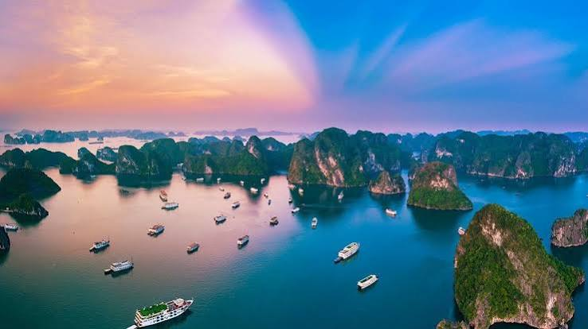

Di sản UNESCO
Vịnh Hạ Long
Kỳ quan thiên nhiên thế giới sở hữu hàng ngàn đảo đá vôi, hang động tự nhiên kì vĩ như Hang Sửng Sốt, Động Thiên Cung.
📍 Miền Bắc
Đặc sản: Chả mực Hạ Long
🗓️ Mùa đẹp: T4 - T10